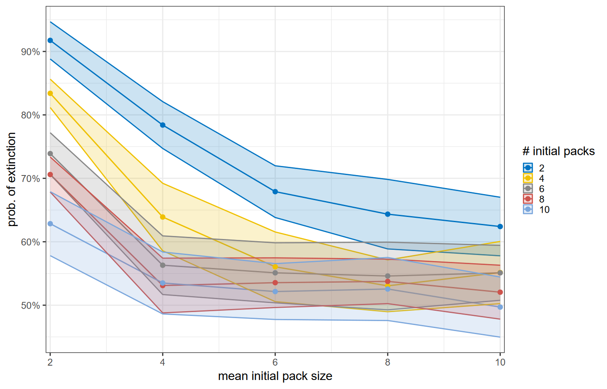
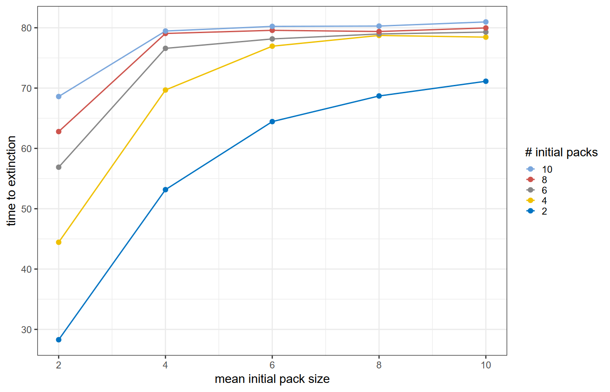
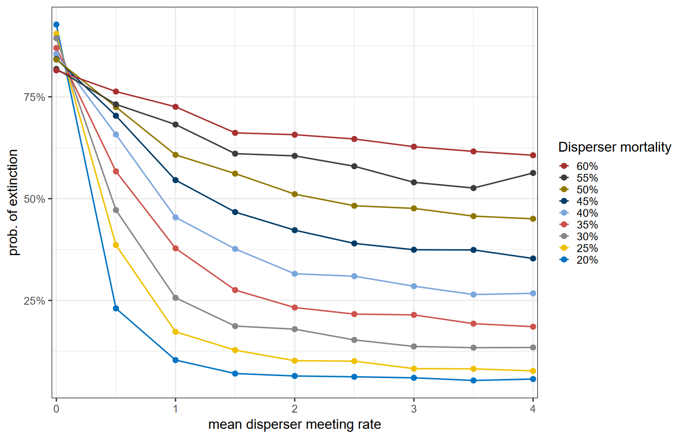
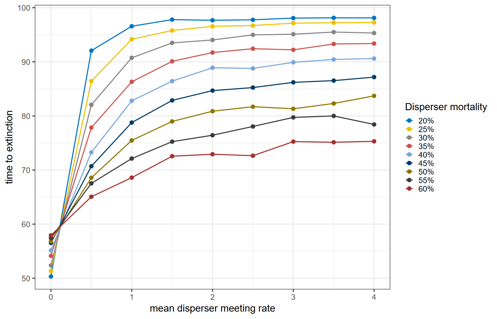
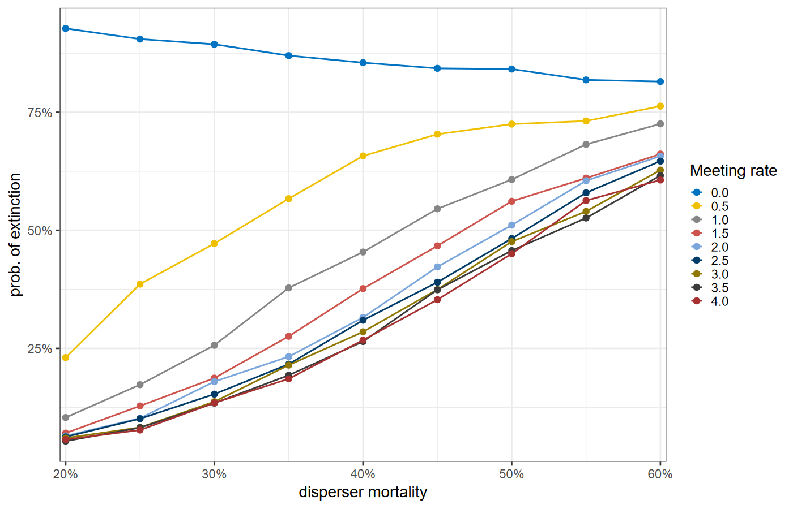

See the downloads page or Brightspace.
https://ees4760.jonathangilligan.org/models/class_19/class_19_models.zip
breed [dogs dog]
breed [cats cat]
globals []
turtles-own
[
sex
age
]
dogs-own
[
has-ball?
]
cats-own
[
has-scratching-post?
claw-length
]to go
tick
ask turtles [ set age age + 1 ]
ask dogs [ if has-ball? [ fetch ] ]
ask cats [ if has-scratching-post? [ scratch ] ]
ask turtles [
; this will make an error
if has-scratching-post? [ scratch ]
]
endGood idea: Check that the right breed is calling the function:
to do-cat-stuff
if not is-cat? self
[
print (word "Error: turtle " self " is not a cat.")
stop
]
if has-scratching-post? [ scratch ]
endIf you have breeds, there will still always be turtles.
ask turtles [...] will ask all breeds of turtle.
ask dogs [...] will only ask the dogs.
Many turtles- commands have a breed-specific version:
if any? turtles-here
[
ask turtles-here [forward 10]
]
if any? dogs-on neighbors and any? cats in-radius 5
[
ask dogs-on neighbors
[
chase min-one-of cats [distance myself]
]
]undirected-link-breed [friendships friendship] ; between friends
directed-link-breed [children-of child-of] ; from parent to children
directed-link-breed [employees employee] ; from boss to employees
to befriend [ new-friend ]
create-friendship-with new-friend ; create friendship
end
to breed [ n ] ; executed in context of parent
create-turtles n [
create-child-of-from myself ; points from parent to new turtle
]
end
to hire [ employee-set ]
create-employees-to employee-set
endset-breed:ask one-of cats [ set breed dog ]
ask one-of friendships [ set undirected-link-breed enmities ]set-default-turtle-shape "circle"
create-cats 1 ; default turtle shape
set-default-shape cats "cat"
set-sefault-shape dogs "dog"
create-cats 1 ; has "cat" shape
ask one-of cats [ set breed dogs ] ; cat becomes dog and changes shape
; to "dog"Lycaon pictus)
Adapted from Markus Gusset et al., “Dogs on the Catwalk: Modelling Re-Introduction and Translocation of Endangered Wild Dogs in South Africa.” Biological Conservation 142, 2774–81 (2009).
| Status | Mortality |
|---|---|
| Pup | 12% |
| Yearling | 25% |
| Subordinate or alpha | 20% |
| Disperser | 44% |
to go
if ticks >= years-to-simulate or not any? dogs
[
if ticks < years-to-simulate
[
set time-to-extinction ticks
set extinct? true
]
stop
]
step ; "step" does all the work of mating, aging, dispersing, dying, etc.
endto get-p-extinct [ n-runs ]
let n-extinct 0
repeat n-runs
[
setup
while [ticks < years-to-simulate and not extinct?] [ go ]
if extinct? [ set n-extinct n-extinct + 1 ]
]
set p-extinction n-extinct / n-runs
end



